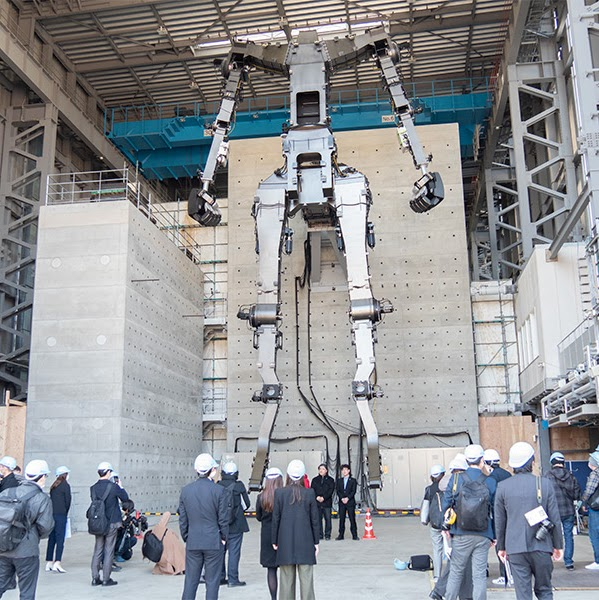

Of the many figures present within fictional mecha, few reach a level as the Gundam. Even compared to other mecha of its time, the iconic design stands tall at 18 meters, ten times the height of the average human. And on the 40th anniversary of the Mobile Suit Gundam anime, a project would be set to bring it to life.
The immense scale of this mecha would prove a challenge never before seen to designers. While life-sized statues of the Gundam and its brethren have already been made, with three adorning the streets of Japan by this point, what was proposed here was a true recreation: one that could move its arms, its legs, and even walk — a task never before accomplished. Nine companies, including the Archax manufacturers of Tsubame Industries, would collaborate and rise to the occasion.
Remaking the 60 foot tall juggernaut proved daunting, and it would take shape as a unique cross between heavy equipment and industrial robot. While true walking was eventually ruled out as impossible, a compromise was made to treat the project as a moving building with added supports to the waist. These supports, part of the platform behind it, would move alongside the frame and act as a third leg.
Throughout its four years of installation, the life sized Gundam garnered a wide array of accolades and two world records, one for largest humanoid robot and another, humorously, for the largest moving Gundam in the world. Despite closing shop in 2024, the frame is to be reassembled for Japan’s 2025 World Expo and will be displayed there as a national symbol and monument to mecha engineering.